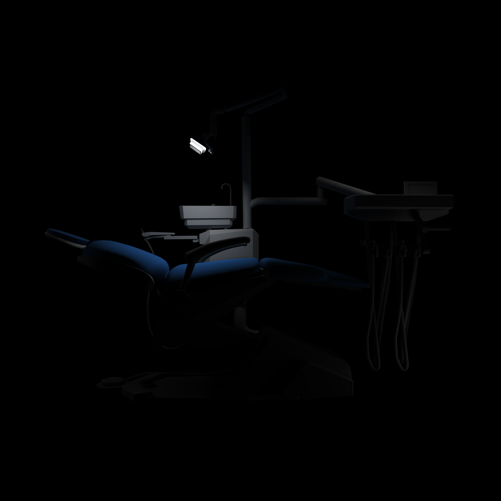
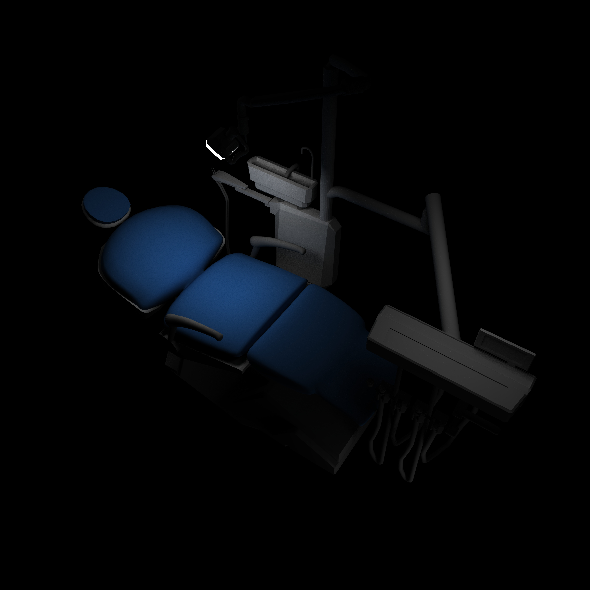

"Dentist"
8.1.20
The dentist brings fear to people due to them thinking of the worst outcomes, I personally think the dentist isnt so bad and just dislike the wait times. I wanted to create a scene where it is just a dentist chair in the dark to try to show the people's view of it when they claim they fear the dentist.